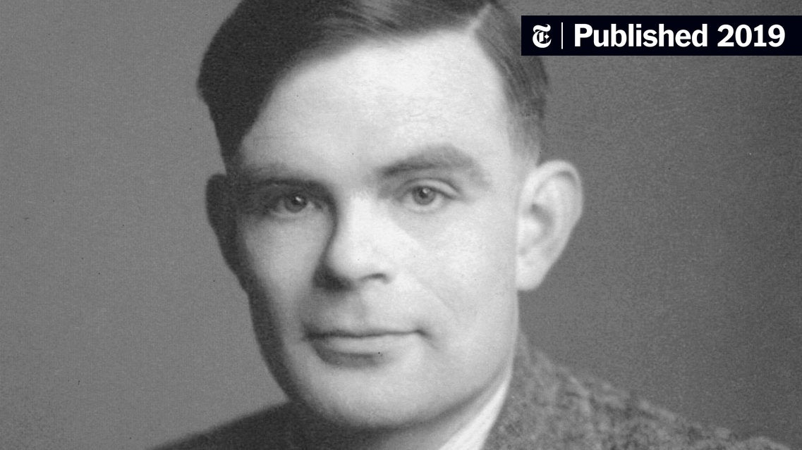

Alan Turing
The man to dream with artificial intelligence

Alan Mathison Turing OBE FRS (/ˈtjʊərɪŋ/; 23 June 1912 – 7 June 1954) was an
English
mathematician, computer scientist,
logician, cryptanalyst, philosopher, and theoretical biologist. Turing was highly influential in the
development of
theoretical computer science, providing a formalisation of the concepts of algorithm and computation with the
Turing
machine, which can be considered a model of a general-purpose computer.
Here is the biography of Alan Turing
- sample text
- sample text
- sample text
- sample text
- sample text
If you have time, you should read more about this incredible human being on his Wikipedia entry.